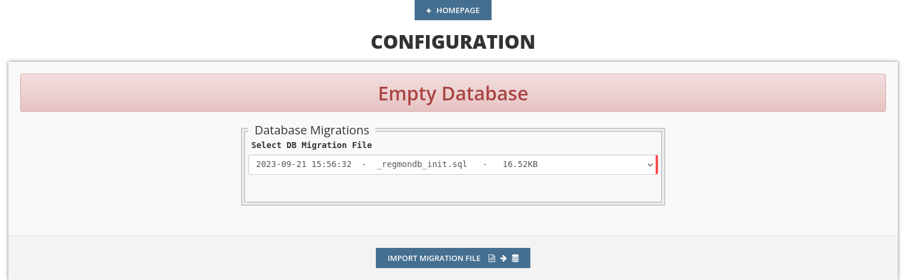

Installation Guide
Introduction
This guide is going to explain the installation routine of the REGmon software. Please note that in order to go on with this guide, several requirements must be met in the first place. This essentially includes additional, preinstalled software (database and web server application) and hardware (e.g. server nodes which are hosted in a data center). If you are planning to use REGmon in production, we assume you have knowledge on how to setup and configure the hardware. The process of hosting and configuring a server instance so it becomes accessible for the outside world is beyond of this guide’s scope. Instead, we focus only on the installation process of the whole software package which is required in order to run REGmon. In case you don’t have a dedicated server running and setup and you just want to try out REGmon on your own, you can still install the software on your local machine by following this guide.
Requirements
As already introduced the requirements are only in scope of required software components. Which additional software needs to be installed depends on your chosen installation routine. As we will see in section Installation Steps in more detail there are two different installation routines. In this section we will list the required software for each routine.
Container-Based
Docker Desktop
Bare Metal
Apache (2.4) or nginx or any other php-ready webserver
- PHP (8.2)
with extensions mbstring, zip, zlib, mysqli, pdo_mysql
MySQL (5.7)
- Additional PHP and JS libraries
Composer for installation of additional PHP libraries
npm for installation of additional JS libraries
Note that you don’t necessarily need the exact versions of the listed software packages. There’s a high chance that REGmon will work with deviating versions (especially newer versions) but we cannot guarantee unless we haven’t tested out so far.
Installation Steps
By following the upcoming installation steps, we want to make sure that every software component which REGmon depends on is going to be installed on your system. In general there are two potential installation routines available: using the container-based installation or the bare metal installation. We recommend opting for the container-based installation method, as this might significantly simplify the installation process for you. Therefore our guide will only cover the containerized installation routine in more detail. Nevertheless you can absolutely install on bare metal, but please be mindful that discrepancies in the versions of installed software components may lead to potential issues. Furthermore we expect the user to have more experience in IT skills if you stick with this routine.
Container-Based
Containers are isolated environments that run consistently across different systems. This makes it easy for us to ensure that REGmon works reliable on your machine regardless of the operating system you use or the presence of any required software dependencies. Therefore we packaged our web application and its dependencies into a single, lightweight unit called a container which can be run on any system with a preinstalled containerization platform. For more information on containers we recommend the Docker overview page.
Prerequisites
In order to build and run containers on your system you will need a containerization platform to be installed. As we use Docker as our preferred platform, please download and install the latest version of Docker Desktop if you haven’t done already. You can install Docker on your own local machine if you just want to quickly test REGmon on your own or install it on your server for production use.
Download Repository
For downloading the repository from github and copying it onto your system you have two options:
Using GIT
This step requires you to have GIT installed on your system. Open a terminal and change the directory to any place where you want REGmon to be downloaded.
After that use the git clone command.
git clone https://github.com/REGmon-project/regmon.git regmon
Then change the directory to the project root folder.
cd regmon
Using ZIP File
Go to https://github.com/REGmon-project/regmon and click on the Code Button.
Then click Download ZIP.
Extract the zipped files to any place you want.
Change to the directory to the place you extracted the project and switch to the project root folder (which is the regmon folder)
Build And Run
In this step we build the container and run the process by the docker compose command.
docker compose -f "docker-compose-prod.yml" up -d --build
This command causes the container to be built in a way that it’s defined in the docker-compose-prod.yml file. The file mainly specifies every software dependency which is going to be needed by REGmon. Note that the build process might need some time as dependencies are first going to be downloaded and then installed within it’s corresponding containers.
If you are a software developer you might want to use the docker-compose-dev.yml file instead of docker-compose-prod.yml in conjunction with the docker compose command.
The first file specifies further software dependencies and configurations which are useful for software development.
After the build process has finished you should see REGmon as a running process by using the ls command of docker compose:
docker compose ls
The result of this command should look similar to the output below. It tells us that 3 containers which belong to the label ‘regmon-os’ have been built from the instructions in the compose file docker-compose-dev.yml and are now in running state.
NAME STATUS CONFIG FILES
regmon-os running(3) /home/user/projects/regmon/regmon-os/docker-compose-dev.yml
In total there are 2-3 containers because every software component is running in it’s own container, namely:
REGmon webapp running on a apache server,
MySQL as our database software
phpmyadmin which is a web-based tool to administrate the MySQL database.
The latter package is optional and might not be installed when you built from docker-compose-prod.yml.
Furthermore these components are already pre-configured to simplify the installation process. This means that in MySQL there is already an empty database called regmondb created and a user with corresponding admin privileges to this database.
When the containers have been successfully built and are in running state, the REGmon web app will be accessible via http://localhost:8000/. Keep in mind that this URL is only accessible if the container has been installed on your own local machine. If it has been installed on a remote server, you have to substitute localhost with your server’s domain or IP address. The same applies for the phpmyadmin url which is on default accessible via http://localhost:8888/.
Bare Metal
Installing on bare metal means installing software directly on your system without any virtualized environment in between. For continuing with this routine make sure you you fulfill the requirements.
Download Repository
For downloading the repository from github and copying it onto your system you have two options:
Using GIT
This step requires you to have GIT installed on your system. Open a terminal and change the DOCUMENT_ROOT directory of your web server.
After that use the git clone command.
git clone https://github.com/REGmon-project/regmon.git regmon
Then change the directory to the project root folder.
cd regmon
Using ZIP File
Go to https://github.com/REGmon-project/regmon and click on the Code Button.
Then click Download ZIP.
Extract the zipped files to the DOCUMENT_ROOT directory of your web server.
Change to the directory to the place you extracted the project and switch to DOCUMENT_ROOT/regmon
Install Dependencies
You can install PHP and JavaScript dependencies conveniently by using the package managers composer and npm. Every dependency for PHP is listed in composer.json and for JavaScript in package.json.
You can use the package manager for php by typing:
composer install
and for JavaScript:
npm install
Alternatively you can use the files “extra/_vendor.zip” and “extra/_node_modules.zip” and extract them to the top level directory of regmon.
Setup Database
In your installed database application create a new database called regmondb and a user with sufficient read and write privileges. Depending on your chosen database application the steps my differ. After this step you can head to the configuration part of this guide.
Configuration
Given that you have successfully installed REGmon and it’s required dependency software (MySQL, Apache), you first need to configure the app before you can use it. This only needs to be done after a fresh installation of the software. The process of configuration consists of three sequentially ordered parts which will be guided in the upcoming subsections. To get to the configuration page go to REGmon’s index page (e.g. http://localhost:8000/ in case of a local installation).
Database
The first part is about setting up the database connection and populating it with some essential data. This requires you to have an empty MySQ database setup and a user with corresponding access rights created which both will be ensured in the previous installation chapter.
Setup Connection
To set up the database connection you might configure the hostname, the database name and the login credentials. If you have followed the container-based installation routine, a database with corresponding login credentials already have been preinstalled within a docker container. In this case you might want to stick with the default settings (shown on the left side of the page) but you are still free type in different credentials or settings for the database (however, note that different settings have to be setup in the MySQL database in the first place).
To test out if a connection to the database can be established with your configuration just click on Test Database Connection. The result should report a success message as displayed in the green box at the bottom. A click on the green arrow will finally write your settings into the REGmon configuration (as displayed on the right side). You can head to the next step by clicking the SAVE ENV button.
Import Data
As the database is empty after a fresh install of REGmon, we have to migrate some predefined data. For this purpose we provide a SQL file from which we can import the bare minimum data into our database which is required to run the app. Just click on IMPORT MIGRATION FILE to go on with the next step.
Admin Login
In REGmon there are different roles like admins, group admins, trainers or athletes. Creating or registering new users with one of the above’s roles can be done later in the app, but for now we need at least one admin as none has been created so far. Therefore type in your credentials and and a valid email address. Additionally you can import some basic example data such as predefined roles or forms. If you prefer a clean installation click on NO, otherwise go to the next step by clicking SAVE MAIN DATA.
App Settings
In the last step you have to configure the webapp itself. For the most settings available we advise you to stick with the default settings provided by us. Otherwise changes can be made but we expect you to have appropriate knowledge regarding web-based technologies.
What certainly needs to be configured is the Email Configuration part. A correct email configuration allows REGmon to send emails which becomes important when new users want to register and get an Email sent back with an activation link. For this purpose type in the hostname and the port of your chosen SMTP Server as well as the corresponding credentials. The other fields define how Emails will be displayed to the addressee.
To finish the configuration just click on SAVE CONFIGURATION which will lead you to the login page of REGmon. Congratulations, you successfully installed REGmon! If you want to make any configuration changes in the future you can do it by logging in as an admin and click on the gear icon.